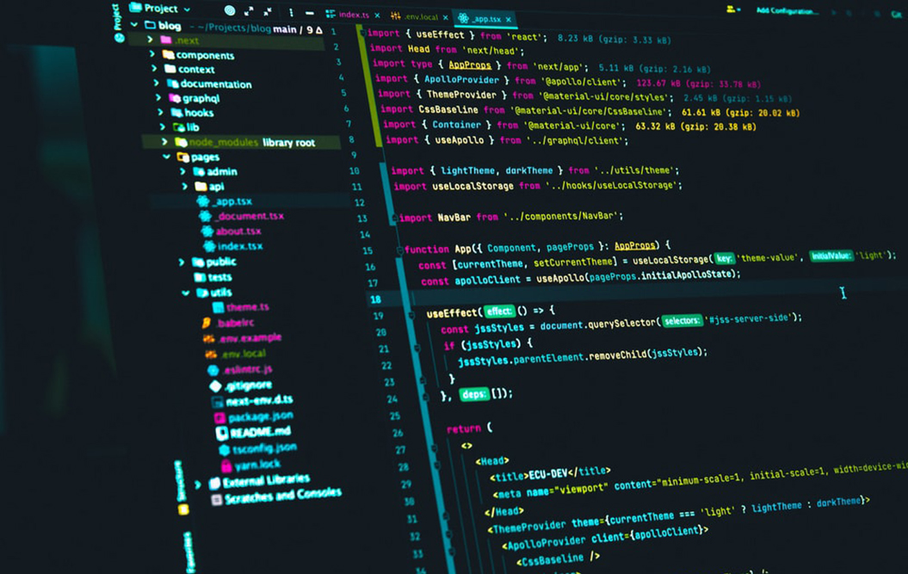

Programación

En 2020 surgió el interés por el negocio de la programación, y aprendí un poco al respecto en internet, pero sin avanzar mucho.
En 2022, pasó a cursar el 1° año de la Enseñanza Media, mismo año que se implantó la Nueva Enseñanza Media en el estado de Paraná, donde vive, y entre los cambios está la incorporación de la disciplina Pensamiento Computacional, junto con esta , tuvo acceso a cursos de  programación ofrecidos por el gobierno, donde aprendió varios conceptos y lenguajes como HTML, CSS y JavaScript, y siguió investigando en el área.
programación ofrecidos por el gobierno, donde aprendió varios conceptos y lenguajes como HTML, CSS y JavaScript, y siguió investigando en el área.
En julio del mismo año, tuvo la oportunidad de tomar el curso de Ciencia de la computación en la Universidad de Harvard (CS50), el cual ha estado estudiando desde entonces.